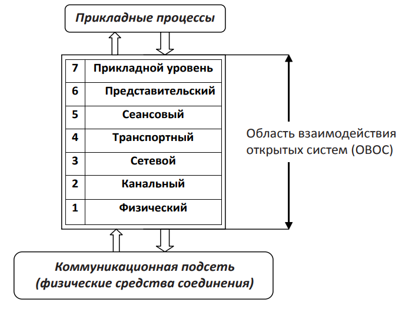
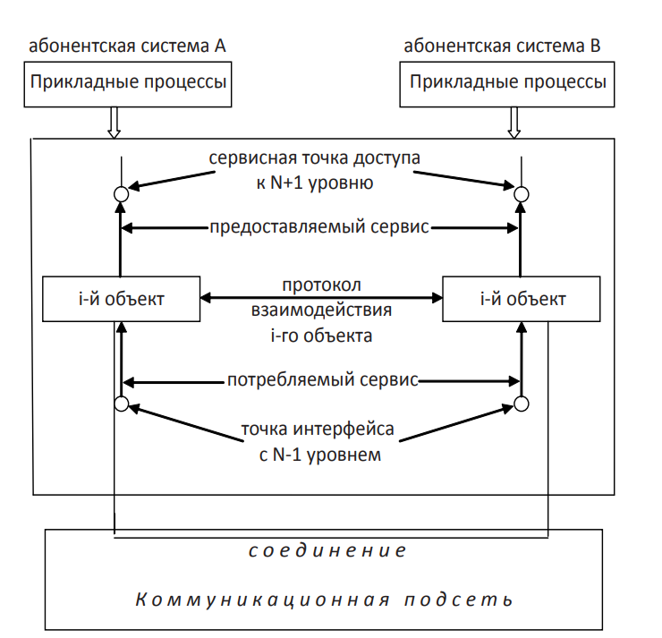
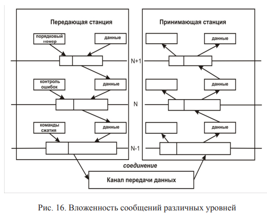

В течение двух последних десятилетий наблюдался значительный рост глобальных сетей. Убедившись, что использование сетевых технологий сулит существенную экономию денежных средств и повышение производительности труда, крупные организации стали уделять особое внимание этому направлению.
Новые технологии и продукты внедрялись сразу после их появления, и поэтому многие сети были сформированы с использованием аппаратных и программных средств различных производителей.
Вследствие этого многие сети оказались несовместимыми, и стало сложным организовывать обмен информацией между компьютерами, использующими различные сетевые спецификации.
Для решения проблемы совместимости Международная организация по стандартизации (International Organization for Standardization, ISO) исследовала существующие схемы сетей.
В результате исследования была признана необходимость в создании международного стандарта, который помог бы поставщикам создавать совместимые сети.
И в 1984 году ISO выпустила в свет эталонную модель взаимодействия открытых систем (OSI).
Архитектура сети подразумевает представление её в виде системы взаимосвязанных элементов, каждый из которых выполняет набор определённых частных функций, при этом все элементы совместно решают общую задачу организации взаимодействия абонентских систем.
Таким образом, архитектура сети отражает разбиение общей задачи на отдельные подзадачи, которые решаются различными элементами сети.
Достижением в стандартизации архитектуры информационных сетей стала разработанная в начале 1980-х годов рядом международных организаций по стандартизации – ISO (International Organization for Standardization), ITU-T и некоторых других – модель, которая сыграла значительную роль в развитии сетей.
Эта модель называется моделью ISO OSI (Open System Interconnection).
Модель OSI является международным стандартом ISO-7498 и определяет способ разбиения задачи взаимодействия «по вертикали».
Эталонная модель OSI быстро стала основной архитектурной моделью взаимодействия между компьютерами.
Несмотря на то что были разработаны и другие архитектурные модели, большинство поставщиков сетей, желая сказать пользователям, что их продукты совместимы и способны работать с разными производимыми в мире сетевыми технологиями, ссылаются на их соответствие эталонной модели OSI.
Модель OSI, как следует из ее названия (Open System Interconnection), описывает взаимосвязи открытых систем.
Что же такое открытая система? В широком смысле открытой системой может быть названа любая система (компьютер, вычислительная сеть, операционная система, программный пакет, другие аппаратные и программные продукты), построенная в соответствии с открытыми спецификациями.
Напомним, что под термином «спецификация» (в вычислительной технике) понимают формализованное описание аппаратных или программных компонентов, способов их функционирования, взаимодействия с другими компонентами, условий эксплуатации, ограничений и особых характеристик.
Понятно, что не всякая спецификация является стандартом.
Под открытыми спецификациями понимаются опубликованные, общедоступные спецификации, соответствующие стандартам и принятые в результате достижения согласия после всестороннего обсуждения всеми заинтересованными сторонами.
Использование при разработке систем открытых спецификаций позволяет третьим сторонам разрабатывать для этих систем различные аппаратные или программные средства расширения и модификации, а также создавать программно-аппаратные комплексы из продуктов разных производителей.
Для реальных систем полная открытость является недостижимым идеалом.
Как правило, даже в системах, называемых открытыми, этому определению соответствуют лишь некоторые части, поддерживающие внешние интерфейсы.
Например, открытость семейства операционных систем Unix заключается, кроме всего прочего, в наличии стандартизованного программного интерфейса между ядром и приложениями, что позволяет легко переносить приложения из среды одной версии Unix в среду другой версии.
Еще одним примером частичной открытости является применение в достаточно закрытой операционной системе Novell NetWare открытого интерфейса Open Driver Interface (ODI) для включения в систему драйверов сетевых адаптеров производства независимых компаний.
Чем больше открытых спецификаций использовано при разработке системы, тем более открытой она является.
Модель OSI касается только одного аспекта открытости, а именно открытости средств взаимодействия устройств, связанных в вычислительную сеть.
Здесь под открытой системой понимается сетевое устройство, готовое взаимодействовать с другими сетевыми устройствами с использованием стандартных правил, определяющих формат, содержание и значение принимаемых и отправляемых сообщений.
Если две сети построены с соблюдением принципов открытости, то это дает следующие преимущества:
• возможность построения сети из аппаратных и программных средств различных производителей, придерживающихся одного и того же стандарта;
• возможность безболезненной замены одних компонентов сети другими, что позволяет сети развиваться с минимальными затратами;
• возможность легкого сопряжения одной сети с другой;
• простота освоения и обслуживания сети.
Ярким примером открытой системы является сеть Internet.
Эта сеть развивалась в полном соответствии с требованиями, предъявляемыми к открытым системам.
В разработке её стандартов принимали участие тысячи специалистов-пользователей из различных университетов, научных организаций и фирм – производителей вычислительной аппаратуры и программного обеспечения, работающих в разных странах.
Само название стандартов, определяющих работу Internet, – Request For Comments (RFC, что можно перевести как «запрос на комментарии») – говорит об открытом характере принимаемых стандартов.
В результате сеть Internet объединила в себе разнообразное оборудование и программное обеспечение огромного количества сетей, разбросанных по всему миру.
Одним из важных и неотъемлемых свойств информационных сетей является их модульность, проявляющаяся не только в многоуровневом представлении коммуникационных протоколов в конечных узлах сети, хотя это, безусловно, важная и принципиальная особенность сетевой архитектуры, но и в её структуре.
Сеть состоит из огромного числа различных модулей – компьютеров, сетевых адаптеров, мостов, коммутаторов, маршрутизаторов, модемов, операционных систем и модулей приложений.
Эти продукты отличаются не только основными функциями (имеются в виду функции, выполняемые, например, повторителями, коммутаторами или программными редиректорами), но и многочисленными вспомогательными функциями, предоставляющими пользователям или администраторам дополнительные удобства, такие как автоматизированное конфигурирование параметров устройства, автоматическое обнаружение и устранение некоторых неисправностей, возможность программного изменения связей в сети и т. п.
Разнообразие увеличивается также и потому, что многие устройства и программы отличаются сочетаниями тех или иных основных и дополнительных функций – существуют, например, устройства, объединяющие в себе основные возможности коммутаторов и маршрутизаторов, к которым добавляется еще и набор некоторых дополнительных функций, характерный только для данного продукта.
В результате не существует компаний, которые смогли бы обеспечить производство полного набора всех типов и подтипов оборудования и программного обеспечения, необходимого для построения сети.
Но, так как все компоненты сети должны работать согласованно, потребовалось принимать многочисленные стандарты, которые если не во всех, то хотя бы в большинстве случаев, гарантировали бы совместимость оборудования и программ различных фирм-изготовителей.
Таким образом, понятия «модульность» и «стандартизация» в сетях неразрывно связаны, и модульный подход только тогда дает преимущества, когда он сопровождается следованием стандартам.
В результате открытый характер стандартов и спецификаций важен не только для коммуникационных протоколов, но и для всех многочисленных функций разнообразных устройств и программ, выпускаемых для построения сети.
Нужно отметить, что большинство принимаемых сегодня стандартов носит открытый характер.
Время закрытых систем, точные спецификации на которые были известны только фирме-производителю, прошло.
Стало очевидно, что возможность взаимодействия с продуктами конкурентов не снижает, а, наоборот, повышает ценность изделия
Базовая эталонная модель OSI составляет теоретическую основу построения современных информационных сетей и описывает организацию взаимодействия прикладных процессов, расположенных в различных абонентских системах сети. Систе- 19 му, удовлетворяющую требованиям стандарта ISO, называют открытой. Под взаимодействием открытых систем понимают абстрактное описание совместного функционирования прикладных процессов, расположенных в различных, удалённых друг от друга открытых системах сети. Модель OSI представляет область взаимодействия открытых систем в виде набора уровней, каждый из которых является слоем иерархического логического описания функционирования области взаимодействия. Полное описание этой модели занимает более 1000 страниц текста. Появление именно такой структуры модели было обусловлено следующими соображениями: • уровень должен создаваться по мере необходимости отдельного уровня абстракции; • каждый уровень должен выполнять строго определённые функции; • границы между уровнями должны выбираться так, чтобы поток данных между ними был минимальным; • количество уровней должно быть достаточно большим, чтобы различные функции не объединялись в одном уровне без необходимости, но не настолько, чтобы архитектура не становилась громоздкой. Модель взаимодействия открытых систем OSI определяет различные уровни взаимодействия систем в сетях с коммутацией пакетов, дает им стандартные имена и указывает, какие функции должен выполнять каждый уровень. Модель OSI определяет 7 уровней области взаимодействия (рис. 14): прикладной, уровень представления, сеансовый, транспортный, сетевой, канальный и физический. Каждый уровень реализует отдельные функции взаимодействия абонентских систем. Любой уровень состоит из активных элементов – объектов. Объекты одного и того же уровня, расположенные в различных абонентских системах, связываются друг с другом посредством соединений, которые создаются расположенными ниже уровнями области взаимодействия и коммуникационной подсетью (рис. 15). Основой базовой эталонной модели OSI являются 4 элемента: – открытые системы; 20 – объекты уровня; – соединения, связывающие объекты и позволяющие им обмениваться информацией; – физические средства соединений.
ISO определяет структуру и функции области взаимодействия открытых систем. На прикладные процессы и коммуникационную подсеть стандарты ISO нераспространяются. Физический уровень может взаимодействовать лишь с определённым видом коммуникационной подсети, поэтому он предъявляет к ней соответствующие требования. В соответствии с разбиением на уровни область взаимодействия рассматривается как совокупность упорядоченного набора расположенных друг над другом логических подсистем. Подсистемы одного и того же уровня образуют подуровень информационной сети. Смежные подсистемы связаны друг с другом через их общий интерфейс.
Идея уровневой организации заключается в том, что каждый уровень системы имеет свои определенные задачи, которые он должен выполнять. Для этого объекты уровня должны общаться с соответствующими объектами такого же уровня в другой системе (рис. 15). Объекты, расположенные на одном уровне в различных абонентских системах взаимодействуют между собой в соответствии со стандартизованными ISO протоколами путём передачи блоков данных протокола (protocol data units, PDUs). Каждый уровень может использовать свое специфическое название для PDU. 22 Протокол – это свод правил и форматов, определяющих взаимодействие объектов, которые расположены на одном уровне. Результатом выполнения уровнем своих задач является расширение сервиса, получаемого от нижнего уровня и предоставляемого верхнему уровню. Прикладной уровень обеспечивает прикладные процессы всем необходимым, чтобы они могли взаимодействовать друг с другом. Для этого прикладные процессы используют служебные блоки данных, называемые примитивами, которые обеспечивают их взаимодействие. Уровневая организация обеспечивает относительную независимость подсистем, что позволяет совершенствовать любую из них, заменять подсистемы одного уровня, не затрагивая функционирование остальных. Документы ISO для каждого уровня определяют: • назначение уровня; • сервис, предоставляемый данным уровнем расположенному над ним уровню; • функции, выполняемые уровнем; • сервис, получаемый от нижнего уровня. Из того, что протокол представляет собой соглашение, принятое двумя взаимодействующими объектами, в данном случае двумя работающими в сети компьютерами, совсем не следует, что он обязательно является стандартным. Но на практике при реализации сетей обычно используются стандартные протоколы. Это могут быть фирменные, национальные или международные стандарты. Модель OSI описывает только системные средства взаимодействия, реализуемые операционной системой, системными утилитами и аппаратными средствами. Модель не включает средства взаимодействия приложений конечных пользователей. Приложения реализуют собственные протоколы взаимодействия, обращаясь к системным средствам. Поэтому необходимо различать уровень взаимодействия приложений и прикладной уровень. Следует также иметь в виду, что приложение может взять на себя функции некоторых верхних уровней модели OSI. Например, некоторые СУБД имеют встроенные средства удаленного доступа к файлам. В этом случае приложение, выполняя доступ к уда- 23 ленным ресурсам, не использует системную файловую службу; оно обходит верхние уровни модели OSI и обращается напрямую к системным средствам, ответственным за транспортировку сообщений по сети, которые располагаются на нижних уровнях модели OSI. Итак, пусть приложение обращается с запросом к прикладному уровню, например к файловой службе. На основании этого запроса программное обеспечение прикладного уровня формирует сообщение стандартного формата. Обычное сообщение состоит из заголовка и поля данных. Заголовок содержит служебную информацию, которую необходимо передать через сеть прикладному уровню машины-адресата, чтобы сообщить ему, какую работу надо выполнить. В нашем случае заголовок, очевидно, должен содержать информацию о местонахождении файла и о типе операции, которую необходимо выполнить. Поле данных сообщения может быть пустым или содержать какиелибо данные, например, те, которые необходимо записать в удаленный файл. Но для того чтобы доставить эту информацию по назначению, предстоит решить еще много задач, ответственность за которые несут нижележащие уровни. После формирования сообщения прикладной уровень направляет его вниз по стеку представительному уровню. Протокол представительного уровня на основании информации, полученной из заголовка прикладного уровня, выполняет требуемые действия и добавляет к сообщению собственную служебную информацию – заголовок представительного уровня, в котором содержатся указания для протокола представительного уровня абонентской станции-адресата. Полученное в результате сообщение передается вниз сеансовому уровню, который, в свою очередь, добавляет свой заголовок, и т. д. (Некоторые протоколы помещают служебную информацию не только в начале сообщения в виде заголовка, но и в конце, в виде так называемого «концевика», например контрольную сумму на канальном уровне.) Наконец, сообщение достигает нижнего физического уровня, который, собственно, и передает его по линиям связи абонентской станции адресату. К этому моменту сообщение «обрастает» заголовками всех уровней (рис. 14). Процесс вложения служебных данных в заголовок конкретного протокола i-го уровня перед отправкой их в сеть называют инкапсуляцией (рис. 16).
Когда сообщение по сети поступает в абонентскую станцию – адресат, оно принимается ее физическим уровнем и последовательно перемещается вверх с уровня на уровень. Каждый уровень анализирует и обрабатывает заголовок своего уровня, выполняя соответствующие данному уровню функции, а затем удаляет этот заголовок и передает сообщение вышележащему уровню. Наряду с термином сообщение (message), существуют и другие термины, применяемые сетевыми специалистами для обозначения единиц данных в процедурах обмена. В стандартах ISO для обозначения единиц данных, с которыми имеют дело протоколы разных уровней, используется общее название «протокольный блок данных» (Protocol Data Unit, PDU). Для обозначения блоков данных определенных уровней часто используются специальные названия: кадр (frame), пакет (packet), дейтаграмма (datagram), сегмент (segment).